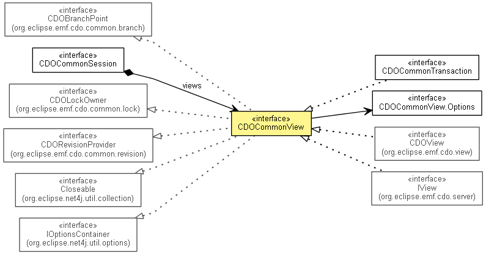

org.eclipse.emf.cdo.common
Interface CDOCommonView
- All Superinterfaces:
- CDOBranchPoint, CDOLockOwner, CDORevisionProvider, CDOTimeProvider, Closeable, IAdaptable, IOptionsContainer
- All Known Subinterfaces:
- CDOCommonTransaction, CDOTransaction, CDOView, InternalCDOTransaction, InternalCDOView, InternalTransaction, InternalView, ITransaction, IView
- All Known Implementing Classes:
- CDOPushTransaction
- public interface CDOCommonView
- extends CDOLockOwner, CDOBranchPoint, CDORevisionProvider, IOptionsContainer, IAdaptable, Closeable

Abstracts the information about CDO views that is common to both client and server side.
- Since:
- 2.0
- No Implement
- This interface is not intended to be implemented by clients.
- No Extend
- This interface is not intended to be extended by clients.
|
Nested Class Summary |
static interface |
CDOCommonView.Options
Encapsulates the configuration options of CDO views that are common to both client and server side. |
getViewID
int getViewID()
- Specified by:
getViewID in interface CDOLockOwner
- Returns:
- the ID identifying the view within the session
isReadOnly
boolean isReadOnly()
- Since:
- 3.0
getSession
CDOCommonSession getSession()
getDurableLockingID
String getDurableLockingID()
- Specified by:
getDurableLockingID in interface CDOLockOwner
- Since:
- 4.0
options
CDOCommonView.Options options()
- Returns the
options of this view.
- Specified by:
options in interface IOptionsContainer
- Since:
- 4.1
Copyright (c) 2011, 2012 Eike Stepper (Berlin, Germany) and others.